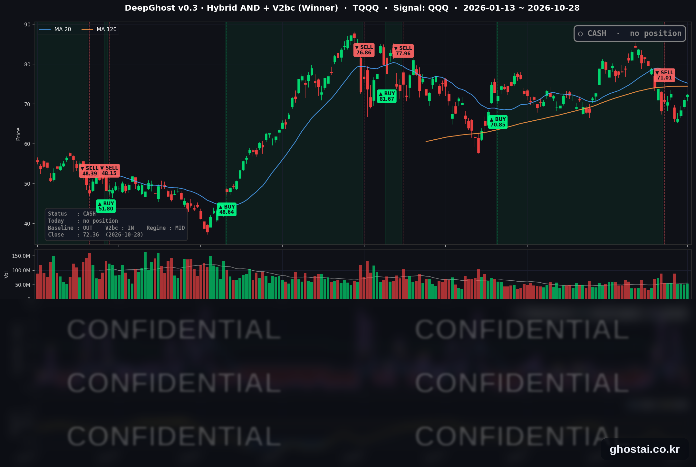

매파적 동결에 10년물 5% 재돌파, 구글 쇼크
· Ghost.AI 데일리 리포트
👻 매일 시그널과 히스토리를 홈페이지에서 한눈에 → www.ghostai.co.kr
회원 페이지 안내 — 회원 가입하시면 커버리지 전 종목의 원본 시그널과 분석 레포트를 매일 확인하실 수 있습니다. 회원 페이지는 블로그·유튜브보다 먼저 업데이트됩니다. 지금 베타 회원을 받고 있으며, 이메일과 필명만으로 가입하실 수 있고 서비스 사용료는 받지 않습니다. 이메일 확인 후 바로 이용하실 수 있습니다.
한 줄 요약: 연준은 기준금리를 동결했지만 위원 2명이 인상을 주장했고, 10년물 국채 금리는 5.045% 로 다시 5% 위에서 마감했습니다. 그래도 반도체·AI 하드웨어주가 사흘째 올라 QQQ 는 0.60%, TQQQ 는 1.86% 올랐습니다. 다만 S&P 500 구성종목 중 오른 종목은 절반이 안 됐습니다. 장마감 후 구글이 실적발표 후 크게 하락하고 있습니다. 선물 및 내일 장 움직임이 신규 매수 신호 발생 여부에 중요한 영향이 있을 것 입니다.
📊 오늘의 매매 신호
| 항목 | 내용 |
|---|---|
| 오늘의 신호 | 🟡 신규 신호 없음 — 전략은 현금 보유를 유지합니다 |
| 포지션 상태 | 💵 현금 보유 중 (OUT OF POSITION) |
| 현금 보유 기간 | 2026-10-19 ~ 2026-10-28 (8거래일) |
| TQQQ 종가 | $72.36(+1.86%) |
TQQQ 시그널 — OUT OF POSITION
현재 상태: 현금 보유 중 | 신규 신호 없음

전략은 10월 19일(월) 미국 장 시가 71.01달러에 TQQQ 를 매도한 뒤 오늘까지 8거래일째 현금 보유 중이며, 오늘 새 신호는 없습니다. 8월 6일 시가 70.85달러에 매수한 이번 거래의 전략 수익률은 +0.23% 입니다.
| 날짜 | TQQQ 종가 | 매도가(71.01달러) 대비 |
|---|---|---|
| 10/19(월) | $70.64 | -0.52% |
| 10/20(화) | $70.41 | -0.84% |
| 10/21(수) | $72.61 | +2.25% |
| 10/22(목) | $66.42 | -6.46% |
| 10/23(금) | $66.29 | -6.65% |
| 10/26(월) | $68.43 | -3.63% |
| 10/27(화) | $71.04 | +0.04% |
| 10/28(수) | $72.36 | +1.90% |
TQQQ 는 사흘 연속 올라 72.36달러로 마감했고, 매도가보다 1.90% 높습니다. 6월 2일 최고 종가(87.22달러)보다는 17.04% 낮습니다.
오늘 미국 시장 — 시황 요약
지수 마감
| 지수 | 종가 | 등락률 |
|---|---|---|
| S&P 500 | 7,743.98 | +0.28% |
| 나스닥 종합 | 26,549.85 | +0.27% |
| 다우존스 | 52,475.10 | +0.19% |
| 러셀 2000 (IWM) | 281.29 | +0.40% |
| QQQ (나스닥100) | 725.61 | +0.60% |
| TQQQ | 72.36 | +1.86% |
| 반도체 ETF (SOXX) | 521.94 | +2.13% |
지수는 소폭 높게 출발했고, FOMC 성명 직후 잠시 내렸다가 워시 의장 기자회견 중 다시 올랐습니다. QQQ 는 SPY(+0.34%)보다 많이 올랐습니다. SOXX 는 사흘 동안 9.15% 올랐지만 6월 22일 최고 종가보다는 20.32% 낮습니다. 사상 최고 종가를 낸 지수는 없으며, S&P 500 은 10월 6일 최고 종가보다 0.96%, 나스닥은 3.80% 낮습니다.
국채 금리 동향
| 만기 | 10/27 종가 | 10/28 종가 | 전일 대비 |
|---|---|---|---|
| 3개월 | 4.040% | 3.995% | -4.5bp |
| 5년 | 4.840% | 4.871% | +3.1bp |
| 10년 | 4.993% | 5.045% | +5.2bp |
| 30년 | 5.305% | 5.361% | +5.6bp |
금리 동결 뒤 3개월물만 내리고 만기가 길수록 더 많이 올랐습니다. 10년물은 나흘 동안 5% 아래에 있다가 10월 21일 이후 처음 5% 위에서 마감했습니다. 10년물과 3개월물의 차이는 하루 사이 95.3bp 에서 105.0bp 로 벌어졌고, 역전은 없습니다. 미 재무부 기준 2년물은 4.67% 로 3bp 내렸습니다. 금리에 민감한 부동산(-0.99%)과 유틸리티(-0.83%)가 업종 중 가장 약했습니다.
연준 발언 & 금리 패스
- 결정: FOMC 는 기준금리를 3.75~4.00% 로 동결했습니다. 표결은 10 대 2 로, 리사 쿡 이사와 베스 해맥 클리블랜드 연은 총재가 0.25%p 인상을 주장했습니다.
- 성명: 경제 활동은 "강한 속도로 확장"하고 있고, 물가는 "여전히 높은 수준"이라고 적었습니다.
- 워시 의장: 다음 결정에 대해 "확정된 결론은 없다"고 했고, 금융 여건을 "긴축적이라고 부를 수 없다"고 말했습니다. 중간선거를 앞둔 결정에 "정치는 아무 역할도 하지 않았다"고 했으며, 2027년부터 금리 결정 없는 전략 회의를 두겠다고 발표했습니다.
- 해석: 동결은 예상대로였지만 인상 쪽 반대가 2표 나와 매파적 동결로 받아들여졌습니다. 다음 회의는 경제전망(SEP)이 나오는 12월 8~9일입니다.
오늘의 핵심 이슈
- 연준 동결, 인상 소수의견 2명, 10년물 5% 재돌파. 장기 금리가 올랐지만 기술주 지수는 반도체 강세로 올랐습니다.
- AI 하드웨어주가 사흘째 올랐지만 시장 전체 폭은 약했습니다. S&P 500 구성종목 중 AI 하드웨어 관련 52종목의 등락률 중간값은 +1.33% 로 사흘 연속 1% 넘게 올랐습니다. 오라클은 2029 회계연도 잉여현금흐름 300억 달러 목표를 제시한 뒤 10.73%, 버티브는 실적과 연간 전망 상향 뒤 16.48% 올랐습니다. 반면 494종목 중 오른 종목은 240개, 중간값은 -0.07% 였습니다.
- 장 마감 후 마이크로소프트·알파벳 실적. 마이크로소프트의 7~9월 분기 매출은 923억 달러(+19%), 애저 매출은 48% 늘었습니다. 알파벳의 3분기 매출은 1,276억 달러(+25%), 구글 클라우드 매출은 103% 늘었고, 분기 설비투자는 514억 달러였습니다. 주가 반응은 29일 정규장 종가에 반영됩니다.
변동성 & 투자심리
VIX 는 17.52 에서 16.91 로 3.48% 내려 사흘 연속 하락했고, 10월 21일 이후 가장 낮은 종가입니다. 공포탐욕지수는 한 매체 기준 35(공포) 로, 1주 전 30 보다 조금 올랐습니다(CNN 원자료는 확인하지 못했습니다). 지수와 VIX 는 나아졌지만, 상승이 AI 하드웨어주에 몰렸고 장기 금리 부담이 다시 커졌습니다.
매크로 & 원자재
| 품목 | 종가 | 등락률 |
|---|---|---|
| 원유 ETF (USO) | $166.57 | +1.64% |
| 금 ETF (GLD) | $373.51 | +0.33% |
- 유가: USO 는 이틀 하락 뒤 반등했고, 10월 23일 올해 최고 종가(169.53달러)보다 1.75% 낮습니다.
- 금: GLD 는 사흘 연속 올랐지만 하루 폭은 작았습니다.
주요 종목 동향
| 종목 | 종가 | 등락률 | 비고 |
|---|---|---|---|
| MU | 983.23 | +5.86% | 메모리주 강세 |
| AVGO | 351.81 | +2.77% | 사흘 연속 상승 |
| INTC | 95.53 | +1.91% | 10/29 장 마감 후 실적 |
| GOOGL | 324.89 | +1.34% | 장 마감 후 3분기 실적(클라우드 +103%) |
| AMZN | 254.60 | +0.59% | 10/29 장 마감 후 실적 |
| MSFT | 531.01 | -0.06% | 장 마감 후 분기 실적(애저 +48%) |
| QCOM | 182.97 | -0.65% | |
| TSLA | 404.22 | -0.80% | |
| NFLX | 61.99 | -0.85% | |
| AAPL | 343.83 | -0.94% | |
| NVDA | 215.38 | -1.17% | 장중 상승분을 내주고 하락 |
| META | 612.49 | -1.24% | 10/21 실적 발표 뒤 5거래일 -12.19% |
커버리지 12종목 중 5종목이 올랐습니다. 마이크론·브로드컴·인텔은 올랐지만 엔비디아·퀄컴은 내려, 반도체 안에서도 방향이 갈렸습니다.
다음 일정 (미 동부시간)
- 10/29(목) 오전 유럽중앙은행 통화정책 결정 / 08:30 3분기 GDP 속보치, 9월 개인소득·지출(PCE 물가) / 장 마감 후 아마존·인텔 3분기 실적
- 11/4(수) 08:30 9월 무역수지
Ghost.AI — Quantitative AI Investment
Model: DeepGhost v0.3 | Transformer-Based Deep Learning
Coverage: 14 tickers | Updated every trading day after US market close
⚠️ 본 자료는 정보 제공 목적으로만 작성되었으며 투자 권유가 아닙니다. 모든 투자의 책임은 투자자 본인에게 있습니다. 과거 성과가 미래 수익을 보장하지 않습니다.
[유의사항]
- 본 서비스는 불특정 다수를 대상으로 발행되는 단방향 정보 제공 서비스이며, 투자자 개인의 재산 상황·투자 목적·위험 선호도를 반영한 개별 투자 조언이 아닙니다.
- 고스트에이아이 주식회사는 고객과 쌍방향 의사소통(개별 상담, 맞춤형 자문 등)을 제공하지 않습니다.
- 본 콘텐츠는 투자 권유 또는 매매 주문의 청약·청약의 권유에 해당하지 않으며, 최종 투자 판단 및 그에 따른 손익의 책임은 전적으로 투자자 본인에게 있습니다.
고스트에이아이 주식회사